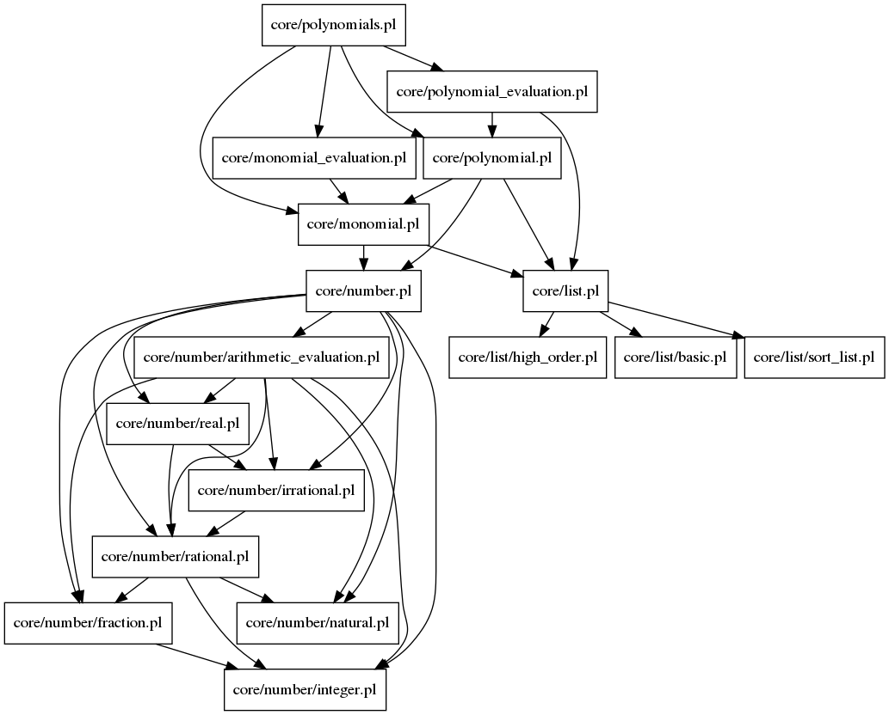

Documentation for Prolog file: polynomials.pl
File used to easily include all predicate related to polynomials and monomials.

Included files:
monomial.html
monomial_evaluation.html
polynomial.html
polynomial_evaluation.html
Generated with DYP